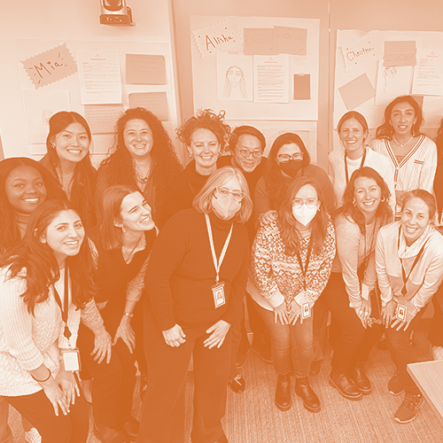

Facilitation + Training
for Transforming Mindset and Building Skills
Our approach to facilitation and training is about creating containers for clarity, connection, and transformation. We work with the whole system in the here-and-now.
Book a callDesigning and guiding group conversations so teams can think clearly together.
We hold the process without providing the answers, blending rigor with warmth and centering humanity and purpose — so teams can surface what matters and make progress on shared challenges.
- A planning phase with stakeholder engagement
- On-site interactive facilitation that fosters connection and trust
- Follow-up including debriefing and next steps
- Typical engagement: full-day, multi-day, or multiple sessions yearly

It was great to name our fears — both personal and professional — and normalize the stress response. I'm appreciative that people will begin to think about how this impacts their functioning and behaviors. Discussing in a circle and the "walk and talks" were great ways to stay energized.
Facilitation is — and isn't.
Facilitation is the right next step when a team is navigating change or uncertainty, when recurring issues stay unresolved, when the leader wants to participate rather than run the room, and when momentum needs to be sustained. The question it answers: "What conversation do we need to have, and how do we do it well?"
Facilitation is
- Designing and guiding group conversations
- Creating structure, safety, and focus
- Helping teams name what's happening
- Sharing responsibility and strengthening ownership
- Moving from insight to alignment
Facilitation is not
- Consulting, problem-solving, or taking sides
- Arriving with answers or fixes
- Standing apart from the group
- A one-time event with no follow-through
- A substitute for the team's own ownership
Ready-to-deliver training modules, built for the realities of mission-driven work.
Our training modules are designed for groups of leaders or learning cohorts to meet their unique challenges. They're experiential and tailored. Choose from our library or co-design a custom series with us.
What you can expect:
- Expert-led and interactive — not slide-heavy
- Flexible formats: virtual, in-person, hybrid
- Designed for sustainability, not overwhelm
- Typical engagement: one to four sessions per module
Common focus areas:
"I walked out of our team retreat feeling confident about my team's roles, responsibilities, and alignment on achieving our overall mission. Getting to know each other and how we operate best will now be much easier, which will unlock our ability to accomplish our objectives."
"Our team retreat allowed us space to express both anxieties and strengths, and I think we understand each other better coming out of it. We defined roles, connected, and now have language to use moving forward. It was such an important step in building our team's foundation."
"Jenna and Stacy were phenomenal facilitators who helped create a space where my team felt comfortable sharing more of themselves than they usually do. They created the right opportunities for me to share my vision while also allowing me to engage in the retreat alongside them."
Facilitation + training in practice.


Let's figure out the right next step.
Book a chemistry call, or take our Healthy Leadership Survey to find out which service would best support you right now.